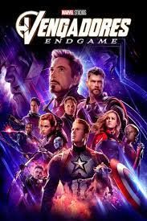
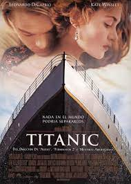
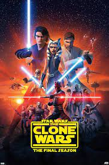
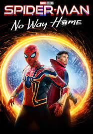

Avatar

Ambientada en el año 2154 y protagonizada por Sam Worthington, Zoe Saldaña, Sigourney Weaver, Stephen Lang y Michelle Rodríguez,
la película Avatar fue una de las primeras que se estrenó en el cine con el renovado formato 3D y utilizó nuevas técnicas de
captura de movimiento para crear a las criaturas de Pandora. Además, creo su propio idioma.
Vengadores: Endgame

La espectacular y épica Vengadores: Endgame ha sido durante meses la película más taquillera de la historia. Aunque le ha costado
más de lo que parecía en un principio, tres meses después de su estreno y un reestreno de por medio con metraje añadido, el film
de Marvel llegó a arrebatarle a Avatar el honor de ser la película más taquillera durante la última década. Pero los alienígenas
azules hace unos mes, se cobraron su venganza.
Titanic

Titanic es una de las películas más laureadas de los Oscar con 11 premios entre los que destacan Mejor Película, Mejor Director,
Mejores Efectos Especiales, Mejor Banda Sonora y Mejor Canción. Una de las mejores recreaciones que se han hecho nunca del
malogrado trasatlántico que se hundió en las aguas del Atlántico.
Star Wars

Primera película de la saga Star Wars bajo la mano de Disney y un nuevo despertar para la galáctica franquicia después de haber
permanecido dormida en los cines por 10 años. Tras la caída del Imperio Galáctico, Leia, Han Solo, Chewbacca y R2-D2 siguen
luchando al lado de la resistencia con el fin de que la Primera Orden no logre imponer su tiránico poder. Mientras tanto, Luke
Skywalker ha desaparecido y se ha retirado de la lucha. Héroes y villanos como Rey, Poe Dameron, Finn, BB-8, Kyle Ren y la
Capitana Phasma forman parte de la nueva generación de Star Wars.
Spider.Man: No Way Home

La nueva película de Spider-Man, aquella que finaliza la trilogía protagonizada por Tom Holland, nos cuenta cómo Peter Parker
decide pedir ayuda al Dr. Strange (Benedict Cumberbatch) de cara a hacer que todo el mundo olvide su identidad secreta. Como
Spider-Man, el bueno de Parker tendrá que hacer frente a una amenaza mayor: los enemigos del trepamuros de diferentes realidades
han entrado en su vida por culpa de un fallo del conjuro del Hechicero Supremo. Villanos como el Duende Verde, Dr. Octopus,
Electro, Hombre de Arena o Lagarto, entran a ajustar cuentas con el arácnido. ¿Contará con ayuda el superhéroe? Quién sabe. No
Way Home es una colisión de realidades y posibilidades, con secuencias de acción de todo tipo.